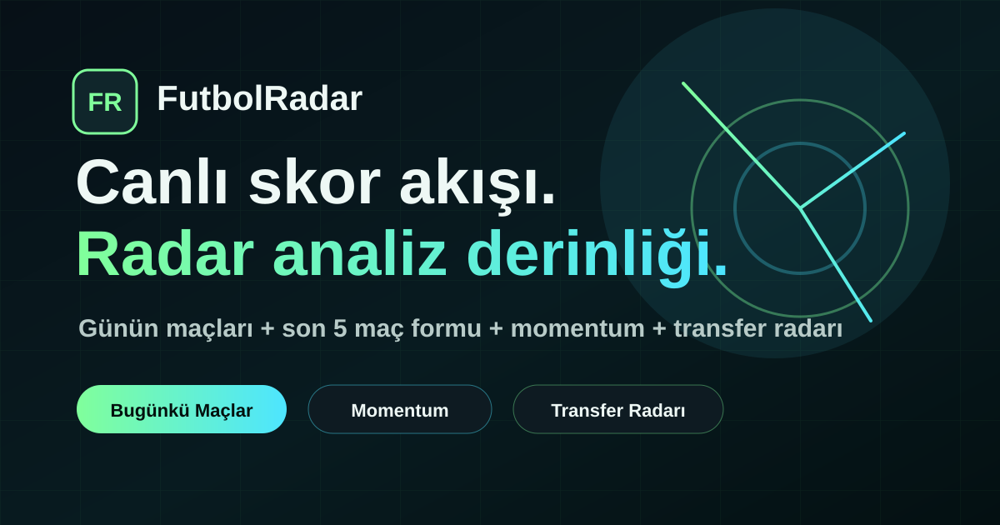

Barcelona Scored Four, Galatasaray Were Left With Questions

Galatasaray went 1-0 up; the game ended 1-4. Time to talk about the issue beyond the score: do big names create a big team?
This is an opinion column. It reflects the writer's personal view and should not be confused with FutbolRadar's verified match data.
Translated from the Turkish original: Read the original column in Turkish
There was an atmosphere worthy of a Champions League night, a strong opponent and big expectations. Against Barcelona, Galatasaray even went ahead through Aleksey Batrakov's goal in the 28th minute. But when the game ended, the scoreboard read 1-4. [1]
This result is not just the loss of three points. It is an opportunity for a serious debate about what kind of football Galatasaray want to play at the highest level in Europe.
More important than the four goals Barcelona scored was how Galatasaray failed to respond to them.
Hope from a goal, a balance that quickly fell apart
Batrakov's goal showed that Galatasaray could punish a strong opponent on the counter-attack. Another goal the yellow-and-reds found in the 34th minute was ruled out for offside after a VAR review. Barcelona equalised through João Cancelo in the 43rd minute. The half ended 1-1. [2]
The picture in the second half was much harsher: Fermín López scored in the 50th minute, Anthony Gordon in the 53rd and Karim Adeyemi in the 65th. Conceding three goals in a fifteen-minute spell calls into question not just the defensive line but the in-game balance of the whole team. [1]
The real question here is this: how were Galatasaray going to manage the tempo and the spaces after going 1-0 up? What new answer had been prepared at half-time for a game that had come back to 1-1?
The real question to ask Okan Buruk
Okan Buruk's achievements in Turkey have a special place. But the Champions League is a different test from league results. Here, defensive distances, the reaction after losing the ball and the quality of playing out of the opponent's press can be decisive within a few minutes.
Galatasaray's failure to build on the chances they created higher up the pitch, and conceding goals in quick succession at the start of the second half, open the coaching staff's in-game interventions to debate. Courage is essential against a big opponent; but courage needs a plan, and the plan needs a second version that can change when necessary.
In Europe the aim should not be just to play a good first half, but to be able to compete for the full ninety minutes.
A collection of star players is not a playing model
The presence of players like Victor Osimhen and Rafael Leão gives Galatasaray significant attacking potential. Names like Torreira and Lemina add fighting power in the centre. But having talented players does not automatically mean a flawless team organisation. [1]
When Osimhen is not given running space and the right service, his individual quality is limited. Leão's pace can lose its effect when it is not supported by the positioning of the rest of the team. The midfielders cannot be expected both to close every gap and to carry the attack on their own.
Barcelona's standout advantage was not only the quality of their players, but their ability to produce movements that complemented each other in dangerous moments. Lamine Yamal setting up two of the goals also pointed to how individual skill and team connections come together. [3]
Normalising four goals would be the biggest mistake
Losing to Barcelona is not in itself a disgrace. But for a team that wants to face opponents like Barcelona every season and improve, it is dangerous to dismiss heavy defeats simply by saying "the opponent was too strong".
Galatasaray must now come up with very concrete answers: how many players keep the defensive balance after losing the ball? What shape do they switch to when the opponent gains superiority in the centre? What are the signals for easing off or stepping up the press in games where they are ahead?
These questions must be answered before the transfer list. Because building an expensive squad and building a sustainable European team are not the same thing.
Final word: there is no lasting success in Europe without playing like Europe
This game does not pass judgement on a coach's whole career. But ignoring the weaknesses it pointed to does not serve Galatasaray either.
The road ahead for Galatasaray lies in improving their organisation without treating defeat as fate. The next Champions League test is away to Lille on 21 October. In that game, not only the score but also the answer given on the pitch to the questions asked against Barcelona will matter. [1]
Barcelona scored four. The real issue is what idea of football Galatasaray will put on the pitch from now on.
This is a FutbolRadar opinion column; match information is based on the sources, and the tactical commentary on the author's assessment.